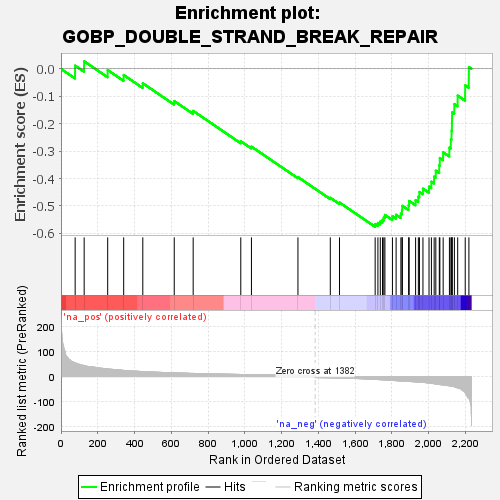
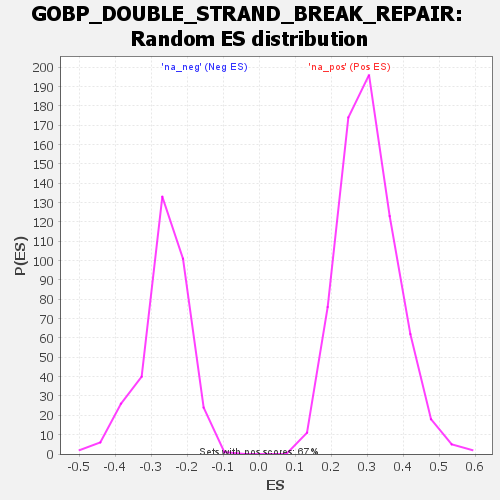

| Dataset | rank |
| Phenotype | NoPhenotypeAvailable |
| Upregulated in class | na_neg |
| GeneSet | GOBP_DOUBLE_STRAND_BREAK_REPAIR |
| Enrichment Score (ES) | -0.5758296 |
| Normalized Enrichment Score (NES) | -2.2030773 |
| Nominal p-value | 0.0 |
| FDR q-value | 7.8198715E-4 |
| FWER p-Value | 0.007 |

| SYMBOL | RANK IN GENE LIST | RANK METRIC SCORE | RUNNING ES | CORE ENRICHMENT | |
|---|---|---|---|---|---|
| 1 | KAT5 | 77 | 53.901 | 0.0115 | No |
| 2 | SPIRE2 | 126 | 43.723 | 0.0274 | No |
| 3 | PELI1 | 254 | 30.092 | -0.0046 | No |
| 4 | KDM1A | 341 | 24.442 | -0.0227 | No |
| 5 | EME2 | 445 | 19.581 | -0.0528 | No |
| 6 | NUDT16L1 | 616 | 14.851 | -0.1176 | No |
| 7 | SAMHD1 | 719 | 12.402 | -0.1535 | No |
| 8 | SMARCD3 | 978 | 8.234 | -0.2642 | No |
| 9 | PARP9 | 1036 | 7.513 | -0.2838 | No |
| 10 | WAS | 1289 | 4.745 | -0.3948 | No |
| 11 | ZNF365 | 1465 | -5.097 | -0.4703 | No |
| 12 | DMC1 | 1515 | -5.843 | -0.4877 | No |
| 13 | RAD54L | 1709 | -11.402 | -0.5660 | Yes |
| 14 | DDX11 | 1724 | -11.881 | -0.5621 | Yes |
| 15 | RAD51AP1 | 1737 | -12.402 | -0.5568 | Yes |
| 16 | EME1 | 1749 | -12.842 | -0.5507 | Yes |
| 17 | SFR1 | 1756 | -13.162 | -0.5421 | Yes |
| 18 | ZGRF1 | 1762 | -13.349 | -0.5328 | Yes |
| 19 | GINS2 | 1803 | -15.521 | -0.5377 | Yes |
| 20 | POLQ | 1823 | -16.321 | -0.5322 | Yes |
| 21 | RBBP8 | 1849 | -17.889 | -0.5282 | Yes |
| 22 | HMGB2 | 1855 | -18.043 | -0.5148 | Yes |
| 23 | CDCA5 | 1857 | -18.079 | -0.4996 | Yes |
| 24 | DCLRE1A | 1891 | -19.470 | -0.4979 | Yes |
| 25 | BRCA1 | 1894 | -19.527 | -0.4819 | Yes |
| 26 | XRCC4 | 1929 | -21.122 | -0.4791 | Yes |
| 27 | UHRF1 | 1944 | -22.126 | -0.4664 | Yes |
| 28 | CDC45 | 1950 | -22.532 | -0.4492 | Yes |
| 29 | TDP2 | 1969 | -23.480 | -0.4371 | Yes |
| 30 | ABL1 | 2002 | -25.507 | -0.4296 | Yes |
| 31 | SKP2 | 2015 | -27.075 | -0.4117 | Yes |
| 32 | ERCC8 | 2030 | -28.443 | -0.3934 | Yes |
| 33 | NABP1 | 2039 | -29.544 | -0.3715 | Yes |
| 34 | SMARCE1 | 2058 | -31.658 | -0.3524 | Yes |
| 35 | YEATS4 | 2061 | -32.119 | -0.3255 | Yes |
| 36 | HMGA2 | 2079 | -33.357 | -0.3044 | Yes |
| 37 | RAD51 | 2113 | -36.964 | -0.2875 | Yes |
| 38 | MCM7 | 2121 | -37.990 | -0.2578 | Yes |
| 39 | GINS4 | 2125 | -38.333 | -0.2260 | Yes |
| 40 | UBE2N | 2127 | -38.959 | -0.1927 | Yes |
| 41 | FEN1 | 2128 | -39.114 | -0.1589 | Yes |
| 42 | H2AX | 2140 | -40.642 | -0.1287 | Yes |
| 43 | RFWD3 | 2158 | -44.769 | -0.0977 | Yes |
| 44 | CHEK1 | 2199 | -64.379 | -0.0603 | Yes |
| 45 | SIRT1 | 2219 | -87.108 | 0.0064 | Yes |
